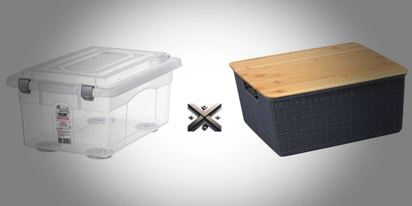

Organizar a casa ou o escritório é uma necessidade constante, e escolher a caixa organizadora certa faz toda a diferença. Entre os modelos mais populares estão as caixas organizadoras com tampa e trava e as caixas com tampa de bambu. Ambas oferecem soluções práticas, mas atendem a necessidades diferentes.
Enquanto as caixas com tampa e trava garantem maior segurança no armazenamento, as de tampa de bambu se destacam pelo visual moderno e decorativo. A escolha ideal depende do uso e do ambiente onde serão colocadas.

Neste artigo, vamos comparar essas duas opções em detalhes, levando em conta uma série de critérios importantes para a escolha ideal. Avaliaremos desde aspectos mais técnicos até os visuais e funcionais, com foco nas reais necessidades do dia a dia:
As caixas com tampa e trava, geralmente feitas de polipropileno, são uma escolha prática para quem busca segurança e organização. Elas protegem bem contra poeira, umidade e até insetos, graças ao encaixe firme da tampa e às travas laterais, que evitam aberturas acidentais. Por serem empilháveis, são perfeitas para mudanças, escritórios ou estoques, otimizando o uso do espaço vertical e mantendo tudo mais organizado e seguro.
Principais características:
Essas caixas com tampa de bambu unem organização e visual agradável. São mais indicadas para guardar itens leves, em ambientes onde o design também conta. Costumam ser feitas de materiais como tecido, MDF ou papelão reforçado, com acabamento mais elegante. Elas são comuns em ambientes como quartos, banheiros e salas, onde a estética conta tanto quanto a função. O bambu é visualmente atraente e ajuda a compor ambientes mais aconchegantes e sustentáveis. Além disso, por serem mais leves, são fáceis de movimentar.
Principais características:
A escolha da capacidade depende do que você pretende guardar. Veja uma comparação:
| Capacidade | Com Tampa e Trava | Com Tampa de Bambu |
|---|---|---|
| 5L a 10L | Acessórios, remédios, papelaria | Bijuterias, cosméticos, pequenos objetos |
| 15L a 30L | Roupas, brinquedos, ferramentas | Documentos, livros, roupas leves |
| 40L a 60L | Roupa de cama, calçados, materiais de limpeza | Não comum nessa faixa |
| 70L a 100L | Itens volumosos, estoque | Raramente encontrados |
Se você precisa armazenar grandes volumes ou objetos pesados, a caixa com tampa e trava é a melhor escolha.
Caixa com tampa e trava:
Caixa com tampa de bambu:
Quando a ideia é guardar coisas por muito tempo ou evitar poeira e umidade, as caixas com tampa e trava são as mais confiáveis. Feitas para aguentar o uso pesado, funcionam bem em lugares como lavanderia, garagem ou até durante mudanças:
Com foco mais decorativo, as caixas com tampa de bambu se dão melhor em locais secos e bem cuidados, como quartos, closets e home offices. São leves, bonitas e combinam com ambientes internos. Ideais para organizar itens leves com um toque de charme, mas não são indicadas para áreas úmidas nem para suportar muito peso ou empilhamento.
Bambu:
Trava:
O bambu é um material renovável e biodegradável, com baixo impacto ambiental. Portanto, se a preocupação é sustentabilidade, as caixas com tampa de bambu são uma opção mais consciente.
Já as caixas de plástico são recicláveis, mas dependem de destinação correta.
Apesar de parecerem mais caras por litro, as de bambu agregam valor estético e são mais indicadas para decoração.
Com tampa e trava:
Com tampa de bambu:
A escolha entre uma caixa organizadora com tampa e trava ou com tampa de bambu depende das suas prioridades:
| Prioridade | Melhor Opção |
|---|---|
| Resistência | Tampa com trava |
| Estilo e decoração | Tampa de bambu |
| Alta capacidade | Tampa com trava |
| Sustentabilidade | Tampa de bambu |
| Preço por litro | Tampa com trava |
| Ambientes úmeros | Tampa com trava |
| Visual moderno/natural | Tampa de bambu |
Se você precisa de funcionalidade, opte pela caixa com tampa e trava. Se busca um visual clean e sofisticado para ambientes internos, a caixa com tampa de bambu é a escolha certa.
Antes de comprar, olhe bem a capacidade em litros, o tipo de tampa e o material da caixa. Esses três pontos dizem muito sobre a durabilidade e o uso que ela aguenta. Em lojas online, os filtros ajudam a comparar rápido, mas o pulo do gato está nos comentários de quem já usou — é lá que você descobre se a tampa realmente fecha bem, se o plástico é firme ou se vale o preço. Pense também no ambiente onde vai usar: nem toda caixa segura umidade ou aguenta empilhamento. Escolher certo já é meio caminho andado para manter tudo no lugar.
Gostou do comparativo? Compartilhe este artigo com quem também quer uma casa mais funcional e bonita!